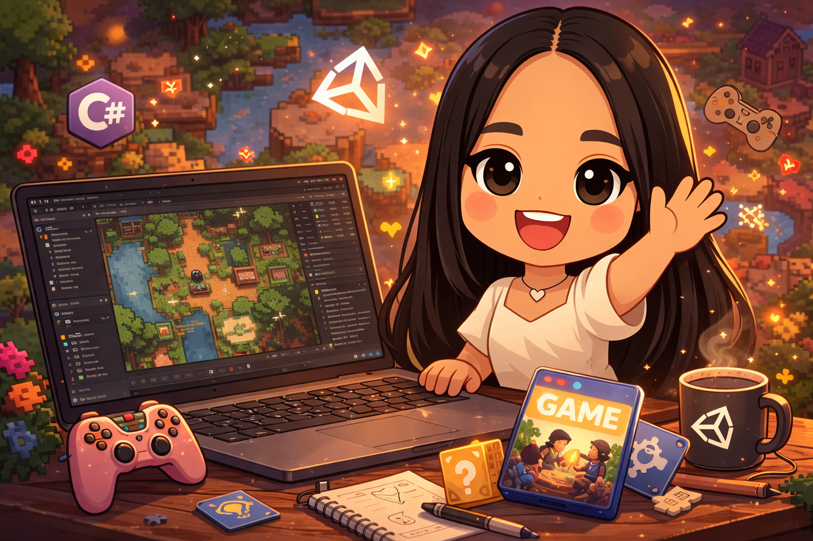
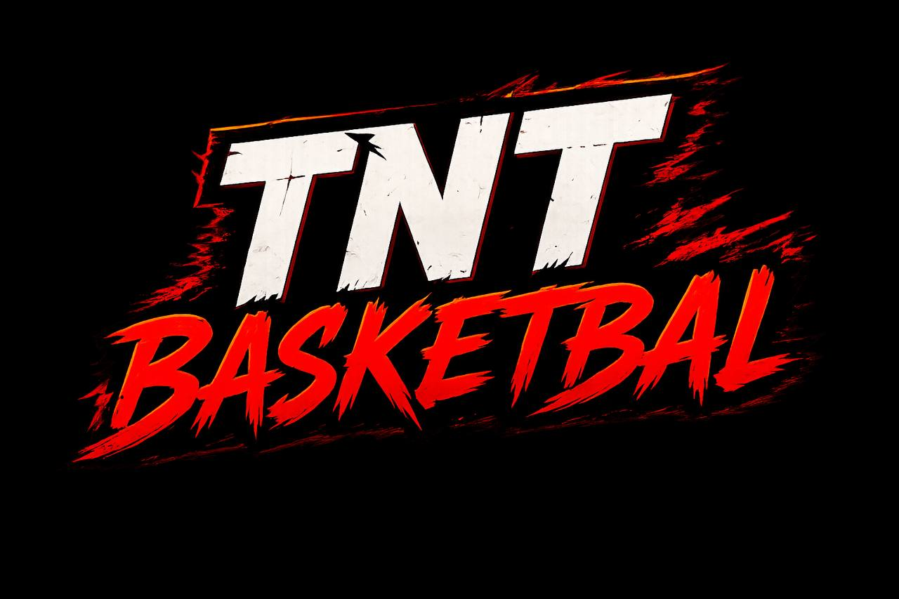
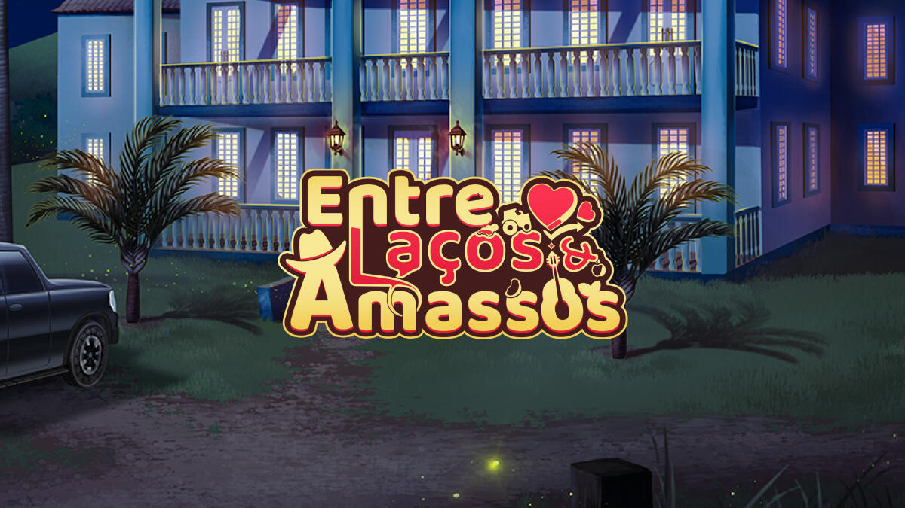
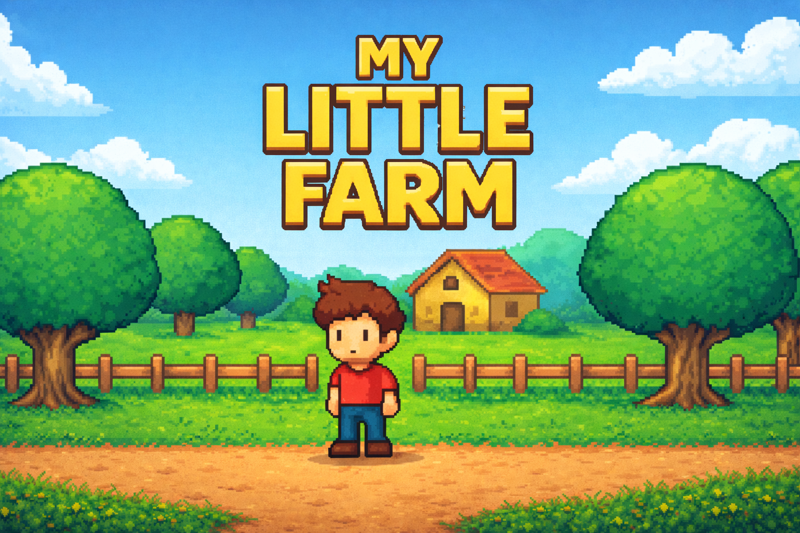
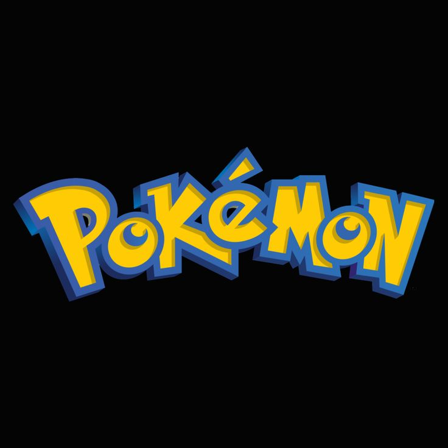

> Olá, eu sou
Laila Zappiello Zally
Crio jogos e sistemas que unem lógica e criatividade, do gameplay ao back-end.
Agora: Auxiliar de TI na Elgin
- 0Projetos
- 0Experiências
- 0Formações

Sobre mim
Zally
Sou apaixonada por desenvolvimento e programação de jogos. Trabalho com C++, C#, .NET, Game Design e criação de experiências interativas que unem lógica e criatividade. Atualmente também atuo como Auxiliar de TI na Elgin.
-
🎮
Game Dev
Mecânicas, sistemas e protótipos em Unity e Godot.
-
⚙️
Back-end
APIs e serviços em C# / .NET, como o ranking online da TNT Basketball.
-
✨
Game Design
Progressão, narrativa e puzzles pensados para engajar o jogador.
Coisas que eu amo
- Zelda Aventura e exploração
- Star Wars May the Force be with you
- O Pequeno Príncipe O essencial é invisível aos olhos
- Pokémon Gotta catch 'em all!
Habilidades
Engines & Design
- UUnity
- GGodot
- GDGame Design
Linguagens
- C#C#
- C++C++
- JJava
Web & Back-end
- .N.NET
- BEBack-end
- AAngular
Projetos

TNT Basketball

Entre Laços e Amassos

My Little Farm

FPS Sci-Fi

Mocci

Engine Java

Pokedex

Projeto em Angular

Projetos Back-end
Minha jornada
Educação
-
2026
Bootcamp em Desenvolvimento de Jogos
Soulcode
-
2025 – 2029
Ciência da Computação
Estácio
-
2022 – 2024
Técnico em Eletrônica
ETEC
-
2022 – 2024
Ensino Médio
ETEC
Experiências
-
10/2026 – Atual
Auxiliar de TI
Elgin
-
10/2025 – 02/2026
Game Developer (Freelance)
Doguinho Studios
-
04/2025 – 10/2025
Game Dev & Game Design (Voluntário)
Instal
-
04/2025 – 07/2025
Jovem Aprendiz Administrativo
Grupo Vamos